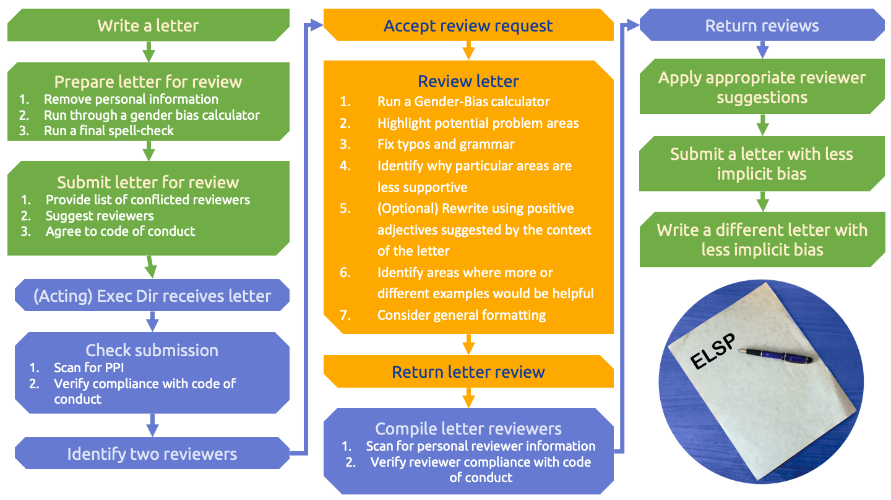

Letter Review
Helping you catch typos and unconscious biases.
We are now accepting reference and nomination letters for review, as well as accepting new reviewers. Letter reviews specifically address common issues introduced by unconscious biases and training sessions for reviewers are offered annually. If you would like to sign up to participate as a reviewer, or would like more information about what that would entail, please contact us at: equitable.space.letters@gmail.com. If you would like to submit a letter for review, please read the submission guidelines and then contact us by email.
Guidelines
Letter Review Workflow
The ELSP review process is designed to be dual-anonymous to create a safe space for people to improve their letter writing skills without judgement. This process is similar to the journal review process, as outlined in the flow chart below. The reviewers and letter submitters do not interact directly; instead the Executive Director is the point of contact for both people.
